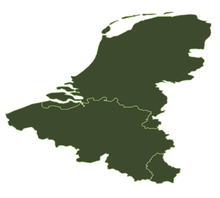

Repérer
L’éclaireur recherche les commerces du secteur dans votre zone avec OpenStreetMap.
UNE ÉQUIPE. TROIS PAYS. VOTRE DÉCISION.
Prosper et ses éclaireurs repèrent les commerces du Benelux, explorent leurs sites et préparent votre premier contact. Vous regardez l’équipe travailler. Vous gardez la main.
Open source · Sur votre ordinateur · Aucun envoi automatique


Des villes réelles.
Des informations vérifiables.
01 — LA MISSION
Une ville, un métier, votre offre. Chaque rôle a une tâche précise, visible à l’écran.
L’éclaireur recherche les commerces du secteur dans votre zone avec OpenStreetMap.
Les lecteurs examinent les sites publics, relèvent les contacts et expliquent chaque point du score.
Les rédacteurs proposent un premier mail fondé sur votre offre et une observation du commerce.
Relisez, corrigez, validez ou refusez. Aucun mail n’est envoyé par le logiciel.
LE QG, SOUS VOS YEUX

02 — VOTRE TERRITOIRE
Une interface en français, néerlandais et anglais. La langue de vos mails se choisit séparément, pour s’adapter à chaque commerce.
Bruxelles / Brussel · Antwerpen · Liège
Amsterdam · Rotterdam · Den Haag
Luxembourg · Esch-sur-Alzette · Differdange
1 181 villes de plus de 5 000 habitants indexées depuis GeoNames, avec leurs variantes de noms.
UN OUTIL QUI VOUS APPARTIENT
Offres, missions et brouillons sont conservés sur votre ordinateur. Les assistants de rédaction utilisent le service auquel vous êtes connecté.
Claude Code ou Codex pour la rédaction. Le projet peut être développé et lancé depuis Claude Code, Cursor ou Codex.
Les installations Git sont prévenues des nouvelles versions. Un bouton lance la mise à jour, en conservant vos données et réglages.
03 — À VOUS D’EXPLORER
Node.js 22.13 ou plus récent et Git sont nécessaires. Connectez Claude Code ou Codex pour préparer les mails ; l’analyse seule fonctionne sans moteur de rédaction.
Ouvrir le projet sur GitHub ↗git clone https://github.com/renaud-bxl/prosper-et-les-prospects.git
cd prosper-et-les-prospects
npm ci
npm startLe QG s’ouvre dans votre navigateur. Commencez par une ville et cinq commerces.
Non. Prosper prépare des brouillons. Vous décidez de leur contenu et de leur utilisation. L’envoi se fait depuis votre messagerie, après avoir vérifié les règles applicables à votre situation.